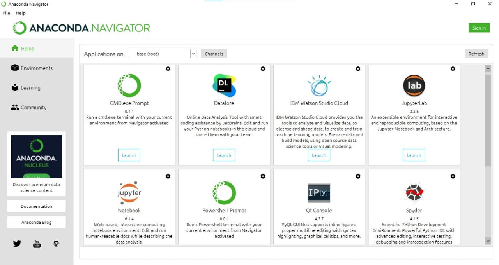
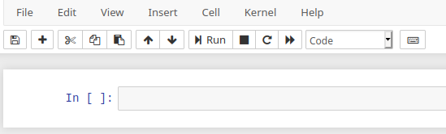

Clase 0: Introducción al lenguaje: Instalación y uso¶
Python es un lenguaje de programación interpretado que se puede ejecutar sobre distintos sistemas operativos; esto se conoce como multiplataforma (suele usarse el término cross-platform). Además, la mayoría de los programas que existen (y posiblemente todos los que nosotros escribamos) pueden ejecutarse tanto en Linux, como en Windows y en Mac sin realizar ningún cambio. Hay dos versiones activas del lenguaje Python.
Python2.X (Python 2) es una versión madura, estable, y con muchas aplicaciones, y utilidades disponibles. No se sigue desarrollando pero se corrigen los errores.
Python3.X (Python 3) es la versión presente y futura. Se introdujo por primera vez en 2008, y produjo cambios incompatibles con Python 2. Por esa razón se mantienen ambas versiones y algunos de los desarrollos de Python 3 se portan a Python 2. En este momento la gran mayoría de los paquetes y utilidades utilizan Python 3 por lo que, salvo muy contadas excepciones, no hay razones para seguir utilizando Python 2.
En este curso utilizaremos Python 3
Documentación y ayuda¶
Un curso más comprensivo, dictado en los últimos años en el Instituto Balseiro.
Algunas fuentes permanentes de ayuda son:
El Tutorial, también en español y la referencia de bibliotecas
En una notebook o en una consola interactiva de Python, mediante
help(<comando>)La documentación de los paquetes:
Matplotlib, en particular la galería
Buscar “palabras clave + python” en un buscador. Es particularmente útil el sitio stackoverflow
Instalación¶
Para una instalación fácil de Python y los paquetes para uso científico se pueden usar alguna de las distribuciones disponibles (Anaconda, Canopy, Winpython).
Si no tiene instaladas las herramientas, una buena opción es instalar la distribución Anaconda que funciona en Linux, Windows y MacOs. Para ello:
Descargue el instalador para su plataforma.
Ejecútelo, y asegúrese de decir que sí cuando pregunte si quiere utilizar Python de Anaconda como predeterminado (importante en caso de que tenga otro!).
Nota
Si bien Anaconda funciona perfectamente en Linux, puede ser más fácil instalar directamente todo lo necesario desde los repositorios de su distribución en la forma susual.
Por ejemplo en Ubuntu:
`sudo apt-get install ipython3 ipython3-notebook spyder python3-matplotlib python3-numpy python3-scipy`
o, en Fedora 28, en adelante:
`sudo dnf install python3-ipython python3-notebook python3-matplotlib python3-numpy python3-scipy`
Primer uso¶
Si instaló Anaconda, busque en el menú de inicio el “Navegador de Anaconda” y ejecútelo. Puede tardar algunos segundos en iniciarse, tenga paciencia. Se encontrará con una pantalla con un menú de varias opciones como la siguiente:
En esta pantalla elija la opción “JupyterLab” (preferentemente) o “Jupyter Notebook” para iniciar una nueva notebook de Python3, que inicialmente está vacía
En la celda puede escribir sus comandos y ejecutarlo con [Ctrl]+[Enter] (o simplemente apretando el botón “Run”). Por ejemplo:
2+1
3